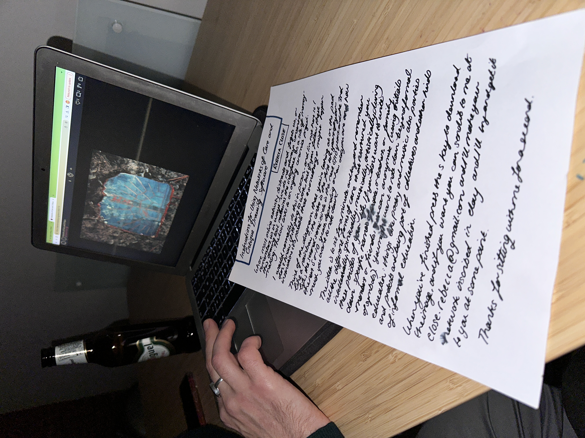
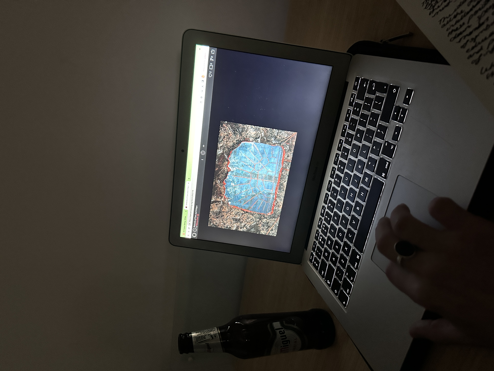

Networks of Care=Critique
[participatory ceramics project,
drawing software + poem
2018-ongoing]

Through conversation (virtual or in person) I guide a memory exercise: think of the diagram like a rainbow, the center is your first 10 years; 2nd semi-circle is ages 10-20; 3rd is 20-30 etc. depending on how old you are. Using the mouse pad note the forms of emotional, intellectual, physical or spiritual care=critique that has been important to you over time: this could be family, teachers, music, poetry, party, protest etc. Perhaps patterns emerge. Press the s key when finished.
After the conversation, I make a ceramic inscription of the network that belongs to each person. In 2021 the project was written up as a piece of drawing software and the excercise was done online: where most online activity distracts & forgets us, or remembers us in ways we do not always consent to, this drawing tool reclaims the interface as a site of memory-making.
Networks has formed part of various exhibitions and new media publications.
After the conversation, I make a ceramic inscription of the network that belongs to each person. In 2021 the project was written up as a piece of drawing software and the excercise was done online: where most online activity distracts & forgets us, or remembers us in ways we do not always consent to, this drawing tool reclaims the interface as a site of memory-making.
Networks has formed part of various exhibitions and new media publications.


In exhibitions, workshops & talks
"Brilliant Vibrating Interface", a software-queer-poetry-electronic-lit anthology, edited by SPAMZINE, Glasgow, 2023. "The Love Ethic", p5.js showcase, curated by Katie Chaan, 2021. "Història(es) de malaltia i cures", conversation with poet Diego Falconi,
curated by David Yubraham Sánchez, Barcelona, 2020. "Queering Space", talks and workshops, curated by Queering Space, London, 2019.



The Internet Turns Thirty (Drawing Software)*
*Poem accompanying the project published in "Brilliant Vibrating Interface Anthology", SPAM Press. the general anxiety surrounding cyberfeminism resulting in the reduction of our work to the question of whether or not we engage with the system of course we considered total opposition to the main frame or else contributed in small ways to society what was done & even the badly done was done exceptionally well whether in ceramics or electronics when you think about it being in touch all the time was taking up hell of a lot of space i was edging towards my thirties had to organise this material intellectually also spiritually started making these ceramic plates for my friends people i admire learnt some modelling techniques for pots using coil-building cross-hatching slip poems & potted histories from scratch i made a pot my teachers were like wow it is a being to me it was a kind of shelter precisely because i could not be located at the same time you know i was having this embarrassment coming from was i a woman? keep going though i said to the clay when it was dry & when it was wet i said be fixed the clay was cold the smell of river my hands dry because how are we talking about love? it matters someone pointed out to me i was hoarding so many movies which i found through the most basic 18th century search terms like ‘GENAERAYT’ & ‘PRINT’ because of failure as an artist? or my body? no no the visual material another friend said you know this comes from your body it never occurred to me he was referring to my reproductive capacity i don’t know if i felt more powerful then or now there is a part of me that wants to be more radical & another part that wants to give presents to friends there was this one manifesto called Introduction to net.art (1999) a series of instructions on how to be a net artist chiselled into stone people either dismissed Introduction or praised it as ‘a joke on community’ to the extent that it ‘dispelled any dreams of having elided the commodification of art’ presumably because it was itself an art work for sale was it ironic? to me it contained utopias i simply could not ignore irony is supposed to be a one off instrument in the dramatic arts it soothes by representing some happening in such a way the audience becomes aware of something implicit in the story as an instrument it builds complicity but look around you are told to internalise the instrument so you can become detached so you can become objective so you can become universal there is a figure in greek comedy called the eiron: the dis-assembler who holds the power to grab a pussy by deliberately pretending to be less intelligent than he actually is when this is done not to deceive politically nor to violate a woman well that is art are all monuments ironic? to dismiss the plates is like saying it is not important to fabricate worlds that memory is not a pleasure endeavour look at this one so pretty! the first plate i made worked into terracotta red blues blazing through a needle some seeds the focus on inscription allowed me to push my existential questions to the back of my mind i could finally sleep i could finally work on clearing out a cupboard i was calling ‘the garage’ i could finally get on with gathering together the very substance that permits us to relate to one another without moral bankruptcy it was easy to track down there are a lot of examples in history it is happening now i met with friends people I admire & asked them to remember think harder i said tell me about the days the words the music the comfort the pleasure the absence or pressure of something we call care that which permits us to relate to one another without moral bankruptcy i gathered what they gave to me & the plates people liked the exercise because remembering feels nice but then it was out there: the info i gave the plates as gifts or put them in a drawer it was beginning to take up hell of a lot of space i was edging towards my thirties had to organise this material intellectually also spiritually m came round so i could show him his he said oh gosh! I don’t know if I want to see it! & his became the model for the general program because it is beautiful but not because m wanted his plate in his own home b was shocked by the permanence of theirs t still hasn’t done one & d never finished hers when i did mine i did it wrong & i invented it i had to do l’s again because i lost the bit of paper we did the drawing on i think on the bus maybe i threw it away can you believe it i berated myself so hard that day for being such a careless machine l did hers again at my request but it was wrong i had to add bits of information things i myself had observed about her life that were missing i was amassing that which did not belong to me the info was heavy the amount of energy required to keep it cool i was concerned they would surely break in transit & i was moving around so much i needed to return home i started revising early net.art came across writing about post-internet art which i remember from the tail end of a long party in London bring your own commercialisation & its critique was i thinking at that time about irony? where the outside of this elaborate joke was? either way i stored these motifs of self-awareness because well i didn’t have a choice perhaps there could be something called ‘post-irony’ to the extent that detachment & universality are revised like asking why are we embarrassed or sad? i’m genuinely asking you i have some ideas i take the plates out of the drawer they are so that blazing through blue arrange them around my body in an array shake my head i am so fucking obsessed with memory are you (i ask them i start) are you ironic? seriously are you in this with me? there they are standing alone in a world of stone they could respond & did i thanked my friends for doing this with me & if you want to make yours i’m still here: https://openprocessing.org/sketch/892779